CS 194-26: Image Manipulation and Computational Photography
Kenny ChenProject 3: Face Morphing
Overview
In this project I produced a "morph" animation of my face into other people's faces, computed
the mean of a population of faces, and extrapolated from a population mean to create a caricature of myself.
I did this using affine transformations of triangles that were defined using a Delaunay triangulation on
corresponding points on the two images being morphed.
Defining Correspondences
To define correspondences, I wrote a function using ginput, taking in $n$ user points.
The main points I chose were those around the eyes, eyebrows, nose, ears, mouth, image corners, and several points
around the face. I chose these points in particular because I felt that choosing important features of the face would yield
better results.
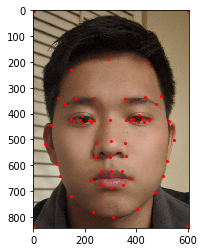
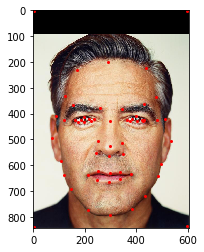
Correspondences
I then created a Delaunay triangulation of the two sets of points, both using the same triangulation.
I did this using the Delaunay function in the scipy.spatial library.
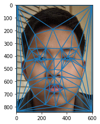
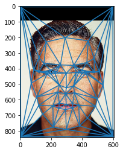
Triangulation
Computing the "Mid-way Face"
This part of the project was the hardest for me because I had a lot of trouble determining how to
process pixels within a triangle at the same time rather than individually. Luckily, numpy and scipy
functions came in handy.
My process for finding the mid-way face started with finding the correspondences then
finding the triangulation of both faces. I then calculated the mid-points of the two sets of correspondence points.
Then, for each triangle, I calculate the affine transformation matrix that maps from the mid-points to the original
points for each image. I did this using the algebraic method, inverting the original points and multiplying by the transformed
points.
I use the inverse warping technique next. I get all the points within the current triangle using the skimage.draw.polygon
function. I then multiply the transformation matrix I found before with these points. I had trouble figuring out
how to do this all at once, but I found that I could stack the $x$ and $y$ coordinates along with an array of 1's
and call np.dot(...) on the transformation matrix and this stacked matrix to get all the transformed coordinates.
We round these transformed coordinate values to get the nearest
coordinates and get all the pixel values in the original triangle based on the transformed coordinates and set all
the new triangle pixels to these values.
We get the following:
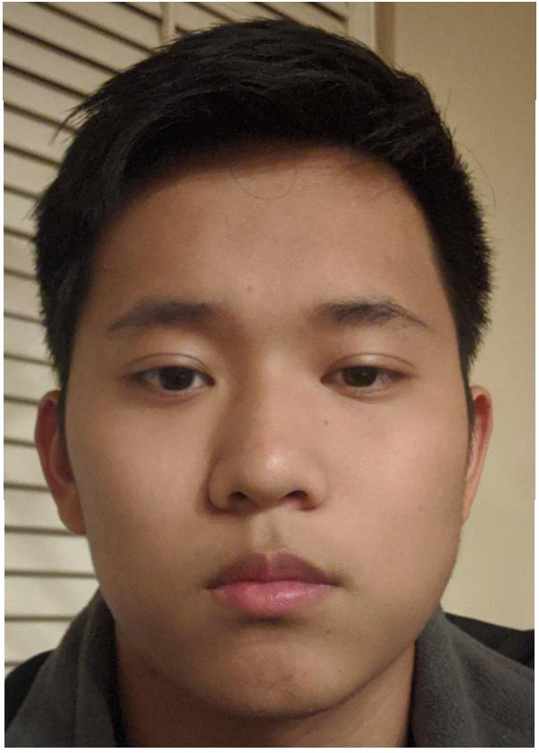
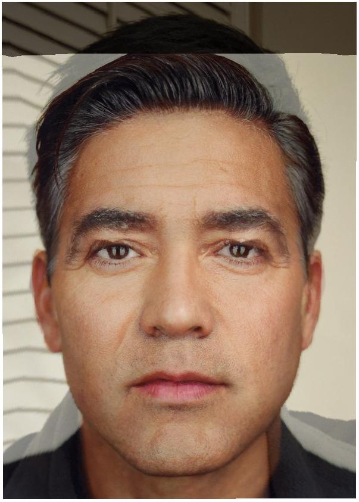
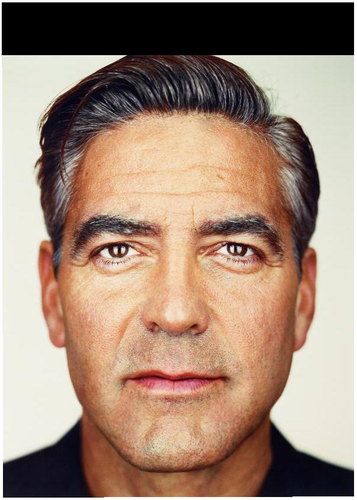
The Morph Sequence
I implemented the complete morph by generalizing some of the functions I wrote for the Mid-Way Face.
For example, I generalized functions for calculating the midpoint of a set of points and the cross-dissolve of images.
Rather than just multiplying by 0.5, I interpolated based on the value of $t$. The following is the morph sequence
from my face to George's.
Another example of the late XXX-Tentacion's (Rest In Peace) face morphed into mine:
The "Mean face" of a Population
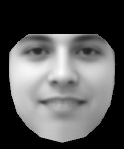
Population average face
I used the spatially normalized frontal images from the FEI Face Database, which is a database of Brazilian people's faces. From these, I chose the male faces
that were smiling. The following are the faces in the dataset morphed to the average face. The average face was
found by summing all the $x$ and $y$ coordinates of the correspondences of each image. This summed value was then
divided by the number of images.
There seems to be a strange artifact on all the chins of the morphed images. This may be due to the selection of the
annotated points. There are also some images that look strange, such as the last one. I found that this was because
the annotation was not good. The annotations around the mouth area in the last area, especially, do not nearly encompass the mouth.
 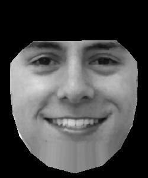
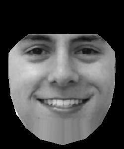
 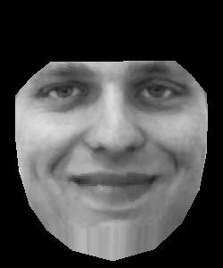
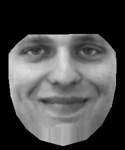
 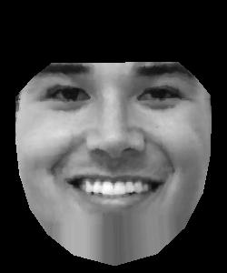
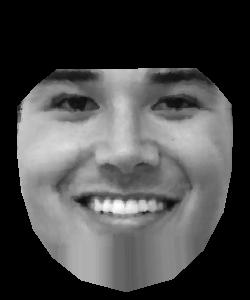

The average face was computed by morphing each face to the average face and dividing this morphed face by the
number of images and summing all these images. The following is the average of Brazilian male smiling faces:
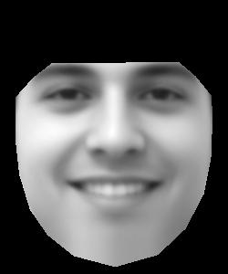
The following is my face morphed to the average. It doesn't look perfect. This may be because my correspondences
are not too good because they weren't consistent with the ones used in the dataset. I had some trouble even
determining the corresponding points because the ones shown on the dataset site was too blurry to see the labels.
The following is the average morphed to my face's geometry. My smile is slightly slanted, and this can be seen
in the smile of the morphed image. The eyes of the morphed image seems smaller because mine are smaller than the
average image.
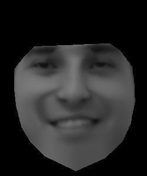
Caricatures: Extrapolating From the Mean
The caricatures were found by morphing my face to the average face. However, I increase the difference between the
corresponding points by some factor $f$. For example, consider corresponding points $(x, y)$ and $(x', y')$. I find
the new point by calculating $f\cdot[x' - x, y' - y]$. I got the following:
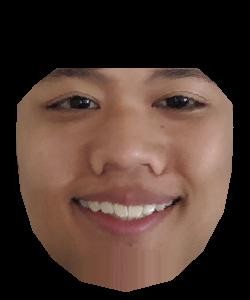
$f=1.1$
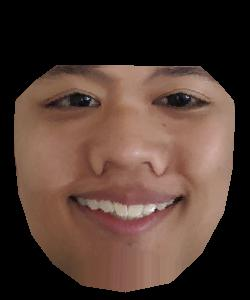
$f=1.4$
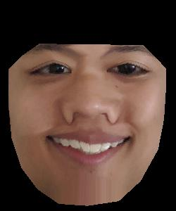
$f=1.7$
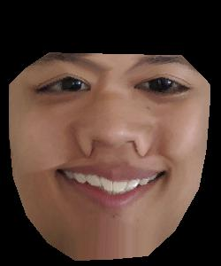
$f=2.0$

$f=2.3$
Bells and Whistles
I implemented part of a face-morphing music video of the students in cs194-26. The following is my
face morphed into my classmate Prince's face.

The following is the class video (the embedded video
may not work due to copyrighted music).
Challenges
Initially, the conceptual ideas were difficult, but after starting my implementation I felt I had a good
idea of how to implement the rest of the project.
The brunt of my challenges came from figuring out how to parallelize my operations rather than using
for loops. I spent a lot of time on Google looking for solutions and functions that would do things I wanted.
Conclusion
This was a really fun project. I really enjoyed playing around with the face morphing with different people.
I also learned a lot about triangulation and transformations from this project. I also have a better understanding
of how sampling techniques are applied, having used nearest sampling in this project.
Overview
In this project I produced a "morph" animation of my face into other people's faces, computed the mean of a population of faces, and extrapolated from a population mean to create a caricature of myself. I did this using affine transformations of triangles that were defined using a Delaunay triangulation on corresponding points on the two images being morphed.
Defining Correspondences
To define correspondences, I wrote a function using ginput, taking in $n$ user points.
The main points I chose were those around the eyes, eyebrows, nose, ears, mouth, image corners, and several points
around the face. I chose these points in particular because I felt that choosing important features of the face would yield
better results.
I then created a Delaunay triangulation of the two sets of points, both using the same triangulation.
I did this using the Delaunay function in the scipy.spatial library.
Computing the "Mid-way Face"
This part of the project was the hardest for me because I had a lot of trouble determining how to process pixels within a triangle at the same time rather than individually. Luckily, numpy and scipy functions came in handy.
My process for finding the mid-way face started with finding the correspondences then
finding the triangulation of both faces. I then calculated the mid-points of the two sets of correspondence points.
Then, for each triangle, I calculate the affine transformation matrix that maps from the mid-points to the original
points for each image. I did this using the algebraic method, inverting the original points and multiplying by the transformed
points.
I use the inverse warping technique next. I get all the points within the current triangle using the skimage.draw.polygon
function. I then multiply the transformation matrix I found before with these points. I had trouble figuring out
how to do this all at once, but I found that I could stack the $x$ and $y$ coordinates along with an array of 1's
and call np.dot(...) on the transformation matrix and this stacked matrix to get all the transformed coordinates.
We round these transformed coordinate values to get the nearest
coordinates and get all the pixel values in the original triangle based on the transformed coordinates and set all
the new triangle pixels to these values.
We get the following:
The Morph Sequence
I implemented the complete morph by generalizing some of the functions I wrote for the Mid-Way Face. For example, I generalized functions for calculating the midpoint of a set of points and the cross-dissolve of images. Rather than just multiplying by 0.5, I interpolated based on the value of $t$. The following is the morph sequence from my face to George's.
Another example of the late XXX-Tentacion's (Rest In Peace) face morphed into mine:
The "Mean face" of a Population
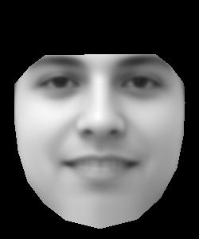I used the spatially normalized frontal images from the FEI Face Database, which is a database of Brazilian people's faces. From these, I chose the male faces
that were smiling. The following are the faces in the dataset morphed to the average face. The average face was
found by summing all the $x$ and $y$ coordinates of the correspondences of each image. This summed value was then
divided by the number of images.
There seems to be a strange artifact on all the chins of the morphed images. This may be due to the selection of the
annotated points. There are also some images that look strange, such as the last one. I found that this was because
the annotation was not good. The annotations around the mouth area in the last area, especially, do not nearly encompass the mouth.
The average face was computed by morphing each face to the average face and dividing this morphed face by the number of images and summing all these images. The following is the average of Brazilian male smiling faces:
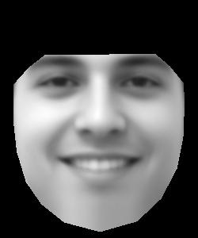The following is my face morphed to the average. It doesn't look perfect. This may be because my correspondences are not too good because they weren't consistent with the ones used in the dataset. I had some trouble even determining the corresponding points because the ones shown on the dataset site was too blurry to see the labels.
The following is the average morphed to my face's geometry. My smile is slightly slanted, and this can be seen in the smile of the morphed image. The eyes of the morphed image seems smaller because mine are smaller than the average image.
Caricatures: Extrapolating From the Mean
The caricatures were found by morphing my face to the average face. However, I increase the difference between the corresponding points by some factor $f$. For example, consider corresponding points $(x, y)$ and $(x', y')$. I find the new point by calculating $f\cdot[x' - x, y' - y]$. I got the following:
Bells and Whistles
I implemented part of a face-morphing music video of the students in cs194-26. The following is my face morphed into my classmate Prince's face.
The following is the class video (the embedded video may not work due to copyrighted music).
Challenges
Initially, the conceptual ideas were difficult, but after starting my implementation I felt I had a good idea of how to implement the rest of the project. The brunt of my challenges came from figuring out how to parallelize my operations rather than using for loops. I spent a lot of time on Google looking for solutions and functions that would do things I wanted.
Conclusion
This was a really fun project. I really enjoyed playing around with the face morphing with different people. I also learned a lot about triangulation and transformations from this project. I also have a better understanding of how sampling techniques are applied, having used nearest sampling in this project.